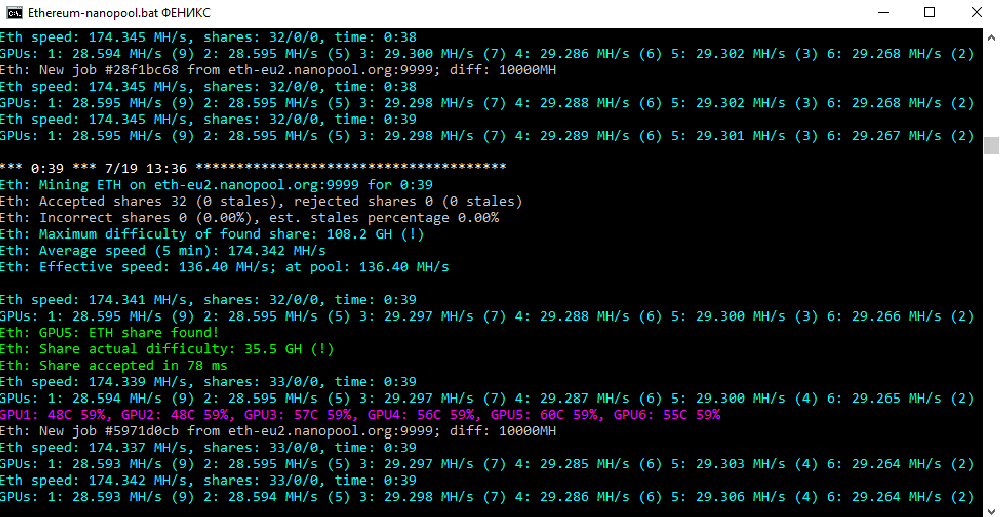

Самый быстрый Ethereum/Ethash майнер с самой низкой комиссией
Изменения в ядрах Nvidia для более стабильной работы и лучшего использования видеокарт
Также реализован майнинг ProgPOW BCI для карт Nvidia. Под Windows вы должны скачать и распаковать файл PhoenixMiner_NVRTC_Windows.zip в той же папке, что и PhoenixMiner.exe, чтобы добывать BCI с картами Nvidia.
Добавлена поддержка всех новых драйверов AMD для Windows до последней версии 19.7.2
Добавлена поддержка всех новых драйверов AMD Linux до последней версии 19.30-838629
Добавлен аппаратный контроль и мониторинг (разгон, напряжение, вентиляторы и т. д.) Для карт Nvidia под Windows. Обратите внимание, что вы должны указать разгон для карт Nvidia относительно значений по умолчанию (например, -mclock +400 вместо -mclock 4400)
Добавлен аппаратный контроль и мониторинг (разгон, напряжение, вентиляторы и т. д.) Для карт Radeon VII (только для Windows)
Добавлен расширенный мониторинг оборудования (укажите -hstats 2 для его активации). Он покажет вам частоту ядра и памяти видеокарт, напряжения и P-состояния (если поддерживается)
Добавлено энергопотребление видеокарт, если драйвер сообщает об энергопотреблении. Вы также можете указать мощность холостого хода (-pidle), эффективность блока питания / видеокарт (-ppf) и стоимость электроэнергии (-prate) и рассчитать для вас ежедневные затраты на электроэнергию. Если вы используете стороннее программное обеспечение для майнинга, которое не ожидает данных о потребляемой мощности в журнале майнера, вы можете отключить его, указав -hstats 0
Добавлен новый параметр -mt для установки таймингов памяти на картах AMD. -mt 0 является значением по умолчанию, которое использует тайминги памяти VBIOS. -mt 1 и -mt 2 используют предопределенные тайминги памяти, которые не зависят от таймингов VBIOS. Эта опция полезна для майнинга с картами RX580 / 570/560/480/470/460 без прошивки Биоса. Это работает только на Windows и с относительно недавними драйверами (за последние 6-8 месяцев)
Стендовый режим теперь работает для дуал майнинга и ProgPOW. Алгоритм определяется параметрами -coin и -dcoin. Например. -bench 10 -coin bci будет тестировать BCI ProgPOW, а -bench 10 -dcoin blake2s будет тестировать дуал майнинг
Увеличена максимальная поддерживаемая DAG эпоха до 450. Обратите внимание, что драйверы AMD не допускают буферов размером более 4 ГБ, поэтому максимально возможная DAG эпоха с текущими драйверами AMD составляет 378.
Добавлена возможность прочитать «FriendlyName» из реестра Windows и использовать его (если доступно) вместо общего имени карты из драйвера.
Исправлены пулы devfee для некоторых альтернативных монет, таких как PIRL и других, в которых многие пулы либо исчезли, либо используют старые версии pre-fork клиентов и добывают не на той цепочке блоков.
Другие небольшие улучшения и исправления.
 PhoenixMiner
Ресурсы для разработчиков